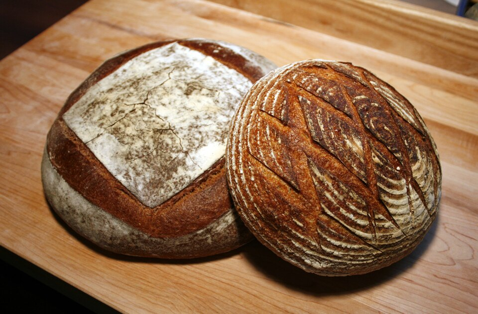

Living Wild Levain
Fed daily with stone-ground flour and pure spring water, our sourdough culture develops billions of wild yeasts and lactic acid bacteria that naturally break down wheat gluten proteins.
Commercial baker’s yeast was invented to speed up bread production at the expense of flavor, texture, and digestibility. At Verdant Bread, we reject industrial shortcuts. Every single loaf we bake is leavened exclusively by our active wild sourdough culture and patient time, unlocking the true nutrition of locally grown grains.

Carefully monitored ambient temperatures, gentle hand manipulation, and blazing deck ovens.
Fed daily with stone-ground flour and pure spring water, our sourdough culture develops billions of wild yeasts and lactic acid bacteria that naturally break down wheat gluten proteins.
Instead of aggressive mechanical dough kneading, we hydrate whole grain flour and gently stretch and fold the dough every thirty minutes to build an elastic, open-crumb structure.
Shaped boules rest inside linen-lined cane banneton proofing baskets in our walk-in retarder at 38°F for 18 to 24 hours, concentrating deep organic acids and blistering sugars.